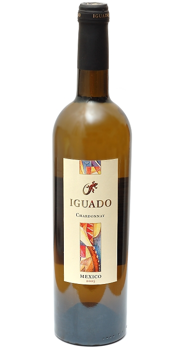
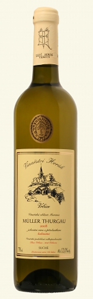
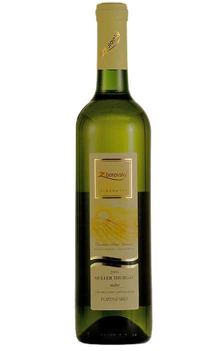
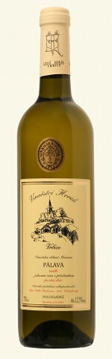
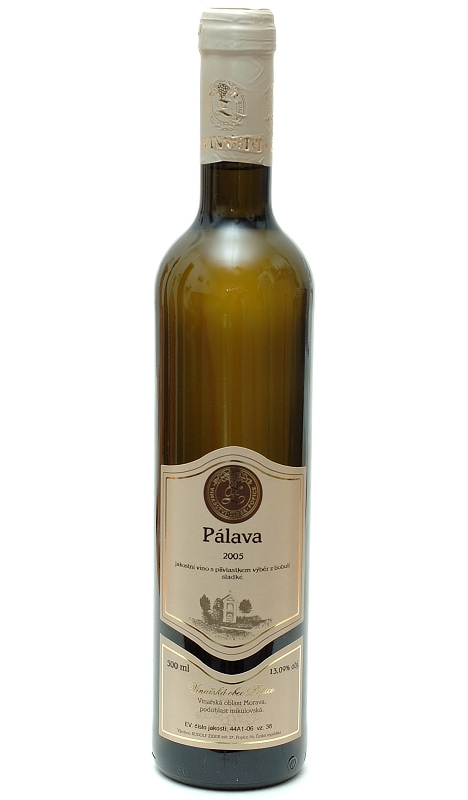
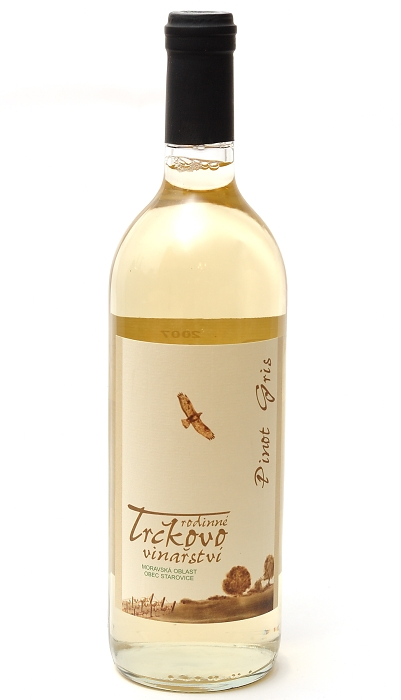
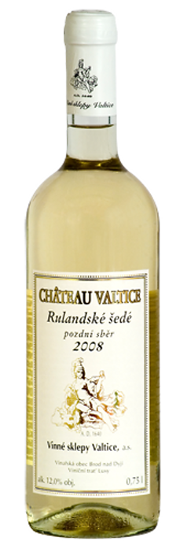

Stranka: | 1 | 2 |
| Chardonnay pozdní sběr ročník 2008 | |||
| Výrobce | Horák |  |
|
| Dostupnost | Obvykle skladem | ||
| Oblast | Velkopavlovická | ||
| Objem | 0,75 l | 265,- Kč/Ks | |
| Obsah cukru | polosladké | Koupit | |
| Obsah alko. | 12,5 % | ||
| Charakteristika: | |||
| Víno má sytou žluto zlatavou barvu. Ve vůni se odráží vyzrálost a kvalita hroznů. Zvláště vás upoutají tóny tropického ovoce, jemný ananas a výrazný zralý banán. Chuť, je koncemtrovaná a kulatá. | |||
| Chardonnay ročník 2005 | |||
| Výrobce | Iguado |  | |
| Dostupnost | Obvykle skladem | ||
| Oblast | Mexiko | ||
| Objem | 0,75 l | 175,- Kč/Ks | |
| Obsah cukru | Suché | Koupit | |
| Obsah alko. | 12,5 % | ||
| Charakteristika: | |||
| Chardonnay se středně plným tělem a komplexním, bohatým buketem. Aroma se vyznačuje vůní citrusů a hrušek. Zrání v dubovém sudu dodává bohatý tanin a dubový charakter s příchutí vanilky a koření. | |||
| Muller Thurgau kabinetní ročník 2008 | |||
| Výrobce | Horák |  | |
| Dostupnost | Obvykle skladem | ||
| Oblast | Velkopavlovická | ||
| Objem | 0,75 l | 182,- Kč/Ks | |
| Obsah cukru | suché | Koupit | |
| Obsah alko. | 12 % | ||
| Charakteristika: | |||
| Víno s čistou jiskrnou barvou se zelenkavými odlesky. Po přivonění se objevuje komplexní příjemná vůně se stopami muškátu a tropického ovoce. Chuť je čistá, lehká se štíhlejším tělem. | |||
| Muller Thurgau pozdní sběr ročník 2006 | |||
| Výrobce | Zborovský |  | |
| Dostupnost | Skladem | ||
| Oblast | Velkopavlovická | ||
| Objem | 0,75 l | 192,- Kč/Ks | |
| Obsah cukru | suché | Koupit | |
| Obsah alko. | 13 % | ||
| Charakteristika: | |||
| Barva tohoto vína je světle žlutá. Ve vůni vystupují jemné tóny ananasu, maracuje a meruněk. Víno je v chuti velmi vyvážené s příjemnou kyselinkou a dlouhou dochutí. | |||
| Pálava pozdní sběr ročník 2008 | |||
| Výrobce | Horák |  | |
| Dostupnost | Skladem | ||
| Oblast | Velkopavlovická | ||
| Objem | 0,75 l | 259,- Kč/Ks | |
| Obsah cukru | polosladké | Koupit | |
| Obsah alko. | 12,5 % | ||
| Charakteristika: | |||
| Odrůda Pálava vznikla křížením Tramín x Müller Thurgau. Vůně je velmi čistá , komplexní a intenzivní s květinovými a ovocnými aromaty. Chuť je excelentní, šťavnatá s pikantní kyselinkou. | |||
| Pálava výběr z bobulí ročník 2005 | |||
| Výrobce | Žídek |  | |
| Dostupnost | Skladem | ||
| Oblast | Mikulovská | ||
| Objem | 0,5 l | 295,- Kč/Ks | |
| Obsah cukru | sladké | Koupit | |
| Obsah alko. | 13,09 % | ||
| Charakteristika: | |||
| Barva tohoto vína je průzračná nazlátlá. Vůně intenzivní bohatá s tony tropického ovoce a exotického koření. Chuť plná kulatá a dlouhá s příjemným pírodním zbytkovým cukrem. | |||
| Rulandské šedé výběr z hroznů ročník 2007 | |||
| Výrobce | Trčka Zdeněk |  | |
| Dostupnost | Skladem | ||
| Oblast | Velkopavlovická | ||
| Objem | 0,75 l | 325,- Kč/Ks | |
| Obsah cukru | sladké | Koupit | |
| Obsah alko. | 11 % | ||
| Charakteristika: | |||
| Víno má krásnou zlatou barvu. Bohaté aroma vyzrálých pomerančů a manga. Víno plné chuti, s jemným ananasovým nádechem. Můžeme ho uchovávat v archivu 8 - 10 let. | |||
| Rulandské šedé pozdní sběr ročník 2008 | |||
| Výrobce | Vinné sklepy Valtice |  | |
| Dostupnost | Skladem | ||
| Oblast | Mikulovská | ||
| Objem | 0,75 l | 192,- Kč/Ks | |
| Obsah cukru | polosuché | Koupit | |
| Obsah alko. | 12 % | ||
| Charakteristika: | |||
| Vůně je plná, ovocná s jemnými hruškovými tóny. Chuť je jemná a sametová. Doporučujeme ke kachně, drůbeži s nádivkou a k sýrům s ušlechtilou plísní. | |||
Stranka: | 1 | 2 |